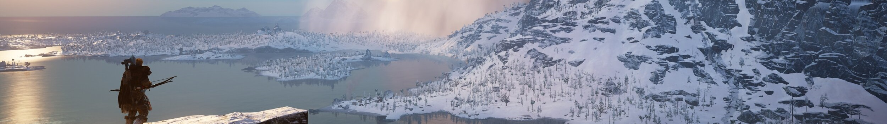
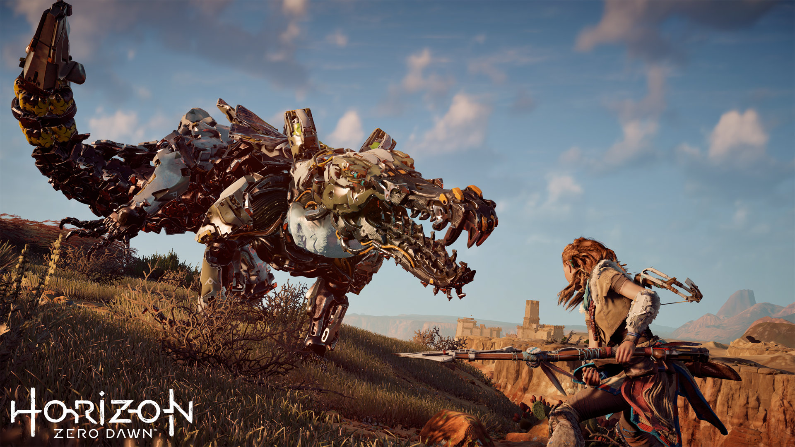

Crearea unui joc video

Crearea unui joc video

Crearea unui joc video
Fiecare generație are forma ei de spus povești, iar jocurile video reprezintă o parte importantă a culturii noastre. Puteți să le ignorați sau să vă bucurați de acestea, observându-le calitatea artistică. Unii oameni sunt pasionați de jocuri video în același mod în care alții sunt pasionați de cinematografie sau de teatru.
-Andy Serkis
Acest proces nu este întotdeauna unul liniar - având în vedere faptul că dezvoltatorul trebuie să se concentreze pe mai multe ramuri, precum programarea propriu zisă, design-ul, arta, testarea etc., pot apărea multe impase și e posibil să fie necesară modificarea mai multor lucruri deja create. Din această cauză, pe lângă timpul necesar brainstorming-ului și efectiv creației, acest proces poate dura câțiva ani.
Creația unui joc video poate fi considerată o știință, cât și o artă. În funcție de succesul pe care îl are, acesta generează un anumit profit.
Procesul de creație și design a unui joc video pornește de obicei de la o idee sau de la un concept. Adesea, ideea se bazează pe modificarea unui concept a unui joc video existent. Tema jocului se poate încadra în unul sau mai multe genuri. Designerii experimentează adesea cu diferite combinații de genuri. Un designer de jocuri scrie, în general, un document inițial de propunere de joc, care descrie conceptul de bază, jocul, caracteristicile, decorul și povestea, publicul țintă, cerințele și programul și, în final, estimările de personal necesar și buget. Fiecare firmă are proceduri și filozofii diferite în ceea ce privește creația și dezvoltarea jocurilor; nu există o metodă de creație standardizată, însă există asemănări.
Acțiunea jocului 'Horizon Zero Dawn' se petrece în viitorul îndepărtat. Tema include numeroase elemente science fiction, mai ales sugerate de prezența creaturilor mecatronice, însă nu susține ideea abandonării planetei în favoarea altor corpuri cerești; în schimb, îmbină idei fantastice într-un mediu apocaliptic, tehnologia fiind folosită într-un plan de existență similar cu cel preistoric, cu scopul de a salva planeta de la distrugere.
În fiecare an se deschid noi firme independente de jocuri video, iar unele reușesc să lanseze titluri de succes. În mod similar, mulți dezvoltatori se închid pentru că nu găsesc un contract de publicare sau producția lor nu este profitabilă. Este dificil să înființezi o nouă firmă din cauza investiției mare și necesare. Cu toate acestea, creșterea pieței de jocuri casual și mobile a permis dezvoltatorilor cu echipe mai mici să intre pe piață. Odată ce firmele devin stabile din punct de vedere financiar, se pot extinde pentru a dezvolta jocuri mai mari. Majoritatea dezvoltatorilor încep având mici dimensiuni și își extind treptat afacerea. Un dezvoltator care primește profit dintr-un titlu de succes poate stoca capital pentru a-și extinde și a-și reforma firma, precum și a tolera mai multe termene-limită nereușite.
Majoritatea jocurilor video pentru PC sau consolă durează de la trei până la cinci ani pentru a fi finalizate, în timp ce un joc video pentru telefon sau tabletă poate fi dezvoltat în câteva luni. Durata dezvoltării este influențată de o serie de factori, cum ar fi genul, scara, platforma de dezvoltare și numărul de resurse.
Unele jocuri pot dura mult mai mult decât intervalul de timp mediu pentru finalizare. Un exemplu bine cunoscut pentru acest caz este 3D Realms' Duke Nukem Forever, anunțat a fi în producție în aprilie 1997 și lansat abia paisprezece ani mai târziu, în iunie 2011.